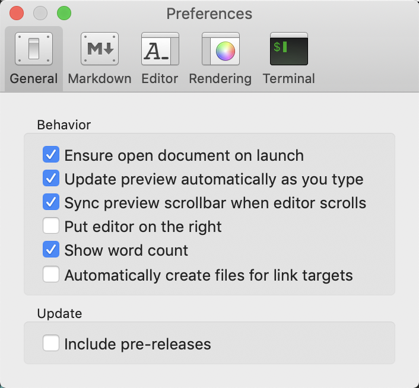
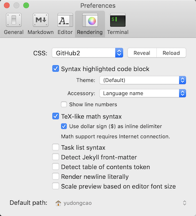
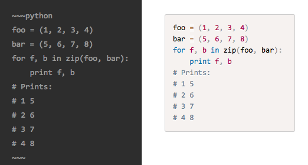
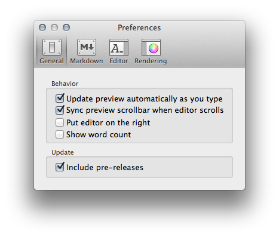
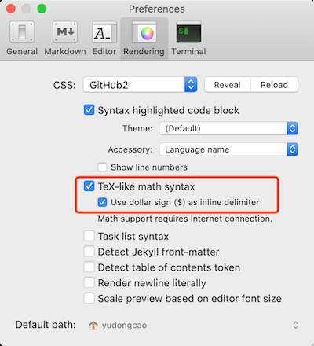
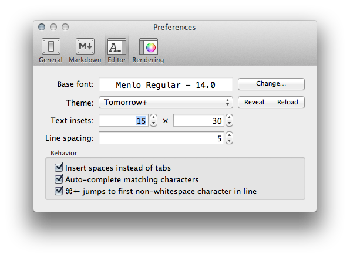

我也不知道为什么我会选了这个软件，之前用过Mou，感觉不错，但是后来又删掉了。今天想重新装回Mou，但是从官网上下下来发现运行不了……然后就发现了这个软件，感觉比Mou好用，缘分啊～
MacDown官网上作者也说了为什么又要写一个Markdown编辑器
Why Another Markdown Editor?
I like Mou. I write Markdown all the time, and since I use OS X on a daily basis, Mou is my go-to editor whenever I wish to generate something with markup. But I had always wanted something more.
It came as a great shock when Chen Luo announced that he felt he could not actively continue the development, and wished to sell the ownership of Mou. No suitable offers surfaced (I honestly do not think there will be, either), and I decided that instead of waiting for others to do something about this, I should act myself.
I don’t have nearly enough money to match Chen Luo’s purposed offer, but I do have my own pocket of tricks and some free time. So I started from scratch, spent some weekends hacking together my own solution. And this is the result.
大概意思是他自己也经常用Mou写Markdown，感觉Mou很方便。但是有一天惊讶的发现Mou的作者Chen Luo说自己已经不准备开发了而且想把要把Mou卖了(各种撕逼，评论很精彩啊)。但是作者表示自己包包里面的钱不够买（Mou拍卖底价50W 大洋），但是自己比价闲又有点程序开发基础，于是决定自己做一个，然后MacDown就这么诞生了!!

目前为止感觉跟Mou差不多，很好看，很好用。但是Macdown不要钱啊！！！而且Macdwon开源啊github传送门！！！！凭这两点就足矣完虐Mou了有没有！！！
下面翻译一下Macdown的官方说明吧
Markdown偏好设置（The Markdown Preference Pane）
在这里设置markdown转换为html的偏好

文件格式
Smartypants插件会根据上下文自动把 (" 和 ') 符号转化成 (“,‘,”和’)。这个功能对于像作者一样排版强迫症很有用。
比如 "test"写在上面就自动变成 “test”这样了
Block Formatting
Table
这是一张表：
| 标题1 | 标题2 |
|---|---|
| 表格 | 表格 |
| 表格 | 表格 |
（中文写这个简直反人类，一定要切换到英文输入法才可以识别！！）
可以通过在|之间加上:符号来控制表格里面文字的排版。
比如：|:------------- |:---------------:| -------------:|这么写分别代表靠左，居中，靠右。
| 靠左 | 居中 | 靠右 |
|---|---|---|
| col 3 is | some wordy text | $1600 |
| col 2 is | centered | $12 |
| zebra stripes | are neat | $1 |
Fenced Code Block
代码块长这样:
1 | print ('Hello world!') |
也可以用这个符号 (~) 代替这个符号(`):
1 | print('Hello world!') |
你也可以在第一行末尾加个语言的名字，然后后面的代码酒会自动高亮了。当然你要把Syntax highlighting in code blocks勾上（在 Preference—>rendering里面）。

1 | foo = (1,2,3,4) |
他现在支持的语言有这些, 基本上的都支持了。一大堆没见过的……
| Language ID | Notes |
|---|---|
| actionscript | |
| apacheconf | Configuration syntax for the Apache HTTP Server. |
| applescript | |
| aspnet ASP.NET | markup in .aspx files. |
| autohotkey | |
| bash | |
| brainfuck | |
| c | |
| c++ | Alias to cpp. |
| clike | Generic syntax for C-like languages. |
| coffee | Alias to coffeescript. |
| coffee-script | Alias to coffeescript. |
| coffeescript | |
| cpp | C++ |
| cs | Alias to csharp. |
| csharp | C# |
| css | |
| dart | |
| eiffel | |
| erlang | |
| fortran | |
| fsharp | |
| gherkin | |
| git | Syntax used in Git commit messages. |
| go | |
| groovy | |
| haml | |
| handlebars | |
| haskell | |
| html | Alias to markup. |
| http | Syntax used in HTTP requests and responses. |
| ini | Windows INI format. |
| jade | |
| java | |
| javascript | |
| jl | Alias to julia. |
| js | Alias to javascript. |
| json | Alias to javascript. |
| jsx | |
| julia | |
| keyman | |
| latex | |
| less | |
| lolcode | |
| makefile | |
| markdown | |
| markup | Generic *ML syntax, e.g. HTML, XML, etc. |
| matlab | |
| nasm | The Netwide Assembler. |
| nsis | |
| obj-c | Alias to objectivec. |
| objc | Alias to objectivec. |
| objective-c | Alias to objectivec. |
| objectivec | Objective-C. |
| pascal | |
| perl | |
| php | |
| powershell | |
| py | Alias to python. |
| python | Python 2. |
| r | |
| rb | Alias to ruby. |
| rest | |
| rip | |
| ruby | |
| rust | |
| sas | SAS. Not an alias to sass. |
| sass | SASS (SASS) |
| scala | |
| scheme | |
| scss | SASS (SCSS) |
| sh | Alias to bash. |
| smalltalk | |
| smarty | |
| sql | |
| stylus | |
| swift | Apple’s Swift programming language. Not the parallel scripting language. |
| twig | |
| typescript | |
| vhdl | |
| wiki | |
| xml | Alias to markup. |
| yaml | YAML |
Inline Formatting
下面这个表代表支持的Inline Formatting
| 名字 | markdown写法 | 看到的结果 |
|---|---|---|
| Intra-word emphasis | So A*maz*ing | So Amazing |
| Strikethrough | ~ |
|
| Underline [^under] | _So doge_ | So doge |
| Quote [^quote] | "Such editor" | Such editor |
| Highlight | ==So good== | So good |
| Superscript | hoge^(fuga) | hogefuga |
| Autolink | http://t.co | http://t.co |
| Footnotes | [^4] and [^4]: | [^4] and footnote 4 |
[^4]:脚注可以随意标记，可以不用数字，也不用按顺序排列。脚注会根据在文章中出现的顺序自动按顺序排列到文章的末尾(像这样写，他会自动显示在文章末尾，网页上显示不了)
The Rendering Preference Pane
这个板块用来设置页面的样式和颜色

CSS
你可以使用不同的CSS来改变html页面的样子，你甚至可以添加自己的CSS。
句法高亮（Syntax Highlighting ）
之前写过如何让一个代码块高亮，不会的可以看这里 Fenced Code Block 。你也可以选用不同的主题来设置高亮。
TeX风格的数学公式（TeX-like Math Syntax ）
（需要联网）
1 | \\[ |
\[
A^T_S = B
\]
或者
1 | <math display="block"> |
（完全不懂他在说什么……）
复选框（Task List Syntax）

Jekyll front-matter
macdown支持 Jekyll，只需要在文件最开始用---标记就好了。例如：
1 | --- |
Render newline literally
通常重起一行需要在上一行末尾打两个空格和一个回车号，你也可以设置为只打一个回车符号。但是不建议你这么做，因为这样写在Macdown上没有任何问题，但是一旦这个文件由其他程序生成那个html界面就扑街了。。。
The General Preferences Pane

从上到下依次是:
- 改变编辑页内容的时候预览内容也会跟着改变
- 滑动编辑页的时候预览也会跟着滑动
- 把编辑页放到右边
- 显示字符数.
- 更新的时候包括预发行版
编辑页偏好设置（The Editor Preference Pane）

Styling
编辑器自带文字高亮显示，你也可以自己修改和调整字体的颜色和大小。当然也有一些自带的主题可以选择。
你也可以自己添加新的主题，点击**Reveal**按钮就可以添加了，文件必须是(.styles)类型否则无法添加。
编辑器有自动补全功能，如果不需要可以手动关闭。
第一次翻译别人的东西，比我想象中的难多了。本来以为两小时搞定，结果用了一下午，中间还有N多东西不确定……我还是好好学英语吧～